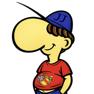
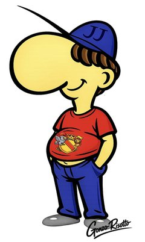

JesmandJosef

Wie gut kennst du Mittelbadisch?
Das Quiz beinhaltet über 1.500 Dialektbegriffe aus dem Mittelbadischen.
Ein herzliches Dankeschön an die freiwilligen Helfer, die dabei mitgeholfen haben!
Speichere Dir diese Seite als Link auf Deinem Homebildschirm (teilen), und Du hast eine kostenfreie App - ganz ohne Datenklau!
JesmandJosef wünscht Dir viel Spaß!